Create Dynamic Data Export report (Labs)
Last updated July 29th, 2026
The Dynamic Data Export feature allows you to generate customized reports tailored to your business needs. You can combine various data insights — such as low battery events, mobile network usage, and app abnormal events — into a single report, eliminating the need to view reports for each insight separately.
And with the ability to output your data in Table, Line graph, or Pie chart format, you can ensure that your custom reports are relevant, impactful, and understandable to both technical and non-technical audiences.

About measures and dimensions
When creating Dynamic Data Export reports, you will need to define your report’s Measures and Dimensions. These are the components that help you make sense of your data.
- Measures are the numerical values you want to analyze, such as total screen time, battery consumption, or app crash counts. They answer “what” you’re measuring.
- Dimensions are the categories that provide context to your measures, such as firmware version, app version, or error codes. They answer “how” or “why” your data is grouped.
By combining measures and dimensions, you can create insightful reports that answer specific questions about your data.
For example, you can build a report that uses “average screen time” as a measure and “app names” as a dimension. With these parameters, you might discover that users spend an average of 45 minutes per day on a non-work-related app, but only 10 minutes on a productivity app. This insight can help you prioritize app improvements or productivity efforts based on user engagement.
To learn about which measures and dimensions are available in Dynamic Data Export, see Supported measures and dimensions.
How to create a report
The following steps describe how to create a Dynamic Data Export report.
Step 1: Enter basic report information
To get started, you’ll need to create a new report, give it a name, and select the report layout. To do this:
-
Click Dynamic Data Export in the left navigation pane.
-
If this is your first time creating a Dynamic Data Export report, click CREATE REPORT near the top-right corner of the page. If you already have existing reports, this button is replaced by an ACTIONS. To create an additional report, click ACTIONS > Create a report.
-
Give your report a title and description, then select a chart type: Table, Line, or Pie.
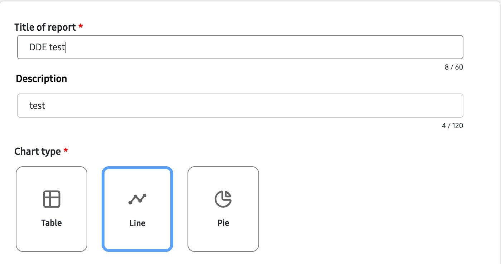
Step 2: Select chart type and date range
Next, you’ll need to specify the date range for your report. To do this, specify your reporting window in the Date range selector. Note the following when selecting a date range:
- For Table and Line chart types, you can also specify “how” you want data grouped in the Intervals field. By default, data is grouped Daily, however if you select This month, Last month, or This quarter, you also have the option to select Weekly.
- For Custom date ranges greater than 90 days, you can only group data in Weekly intervals.
- The Start date and End date fields are populated automatically, based on your selected date range. Click either field to manually select a Custom date range.
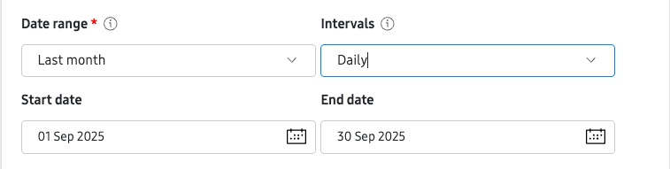
Step 3: Select measures
Once you have your date range selected, you can select the measures you want to include in your report. To do this:
-
In the Measures field, select the type of data you want to analyze (measures). For example, the average screen time.
-
In the Calculation field, select the aggregation method for your measure. For example, average or total (sum).
-
Click + Add measure to include additional measures in your report. You can have up to 10 measures in a single report.
-
To remove a measure, click X.
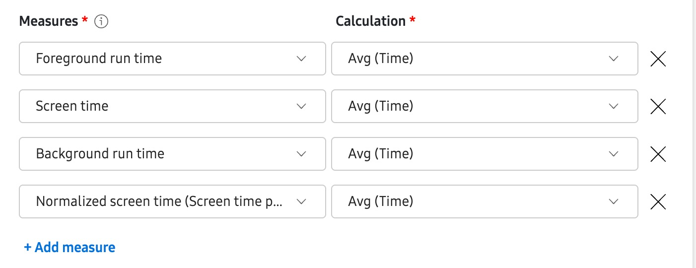
Step 4: Select dimensions
To give context to your data, you’ll need to also specify the report’s dimensions. To do this:
-
In Dimensions, select the context for your report. Note that the available dimensions will vary depending on the selected measures. For example:
-
Selecting an app-related insight like Screen time in the Measures field would allow you to select Application name and Device model in the Dimensions field, as these are contextually related. In other words, a device’s average screen time can be attributed to a specific app, and you can view the average screen time of different device models.
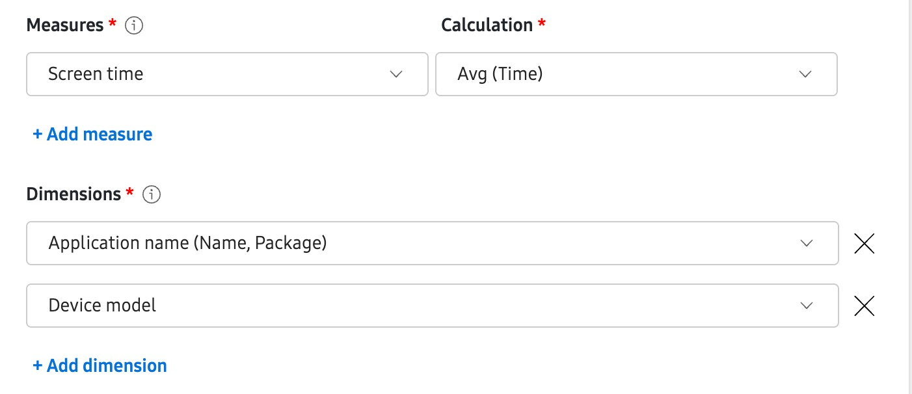
-
However, selecting a battery-related insight like Battery level at shift start in the Measures field and trying to select App version in the Dimensions field would produce an error, as these are not contextually related. An app’s version has no effect on the device’s battery levels at the start of an employee’s shift.
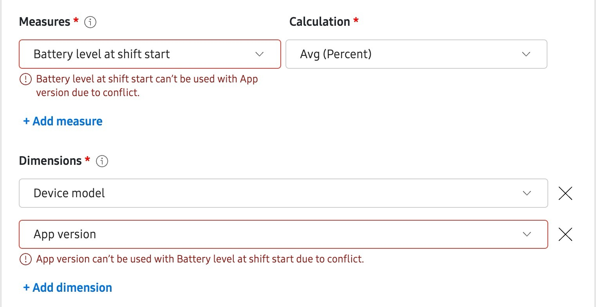
-
-
For Table type reports only, you can include additional dimensions by clicking + Add dimension, or remove dimensions by clicking X. If a selected dimension has conflicts with the selected measures, you’ll see an error. To resolve this conflict, select a different dimension or measure.
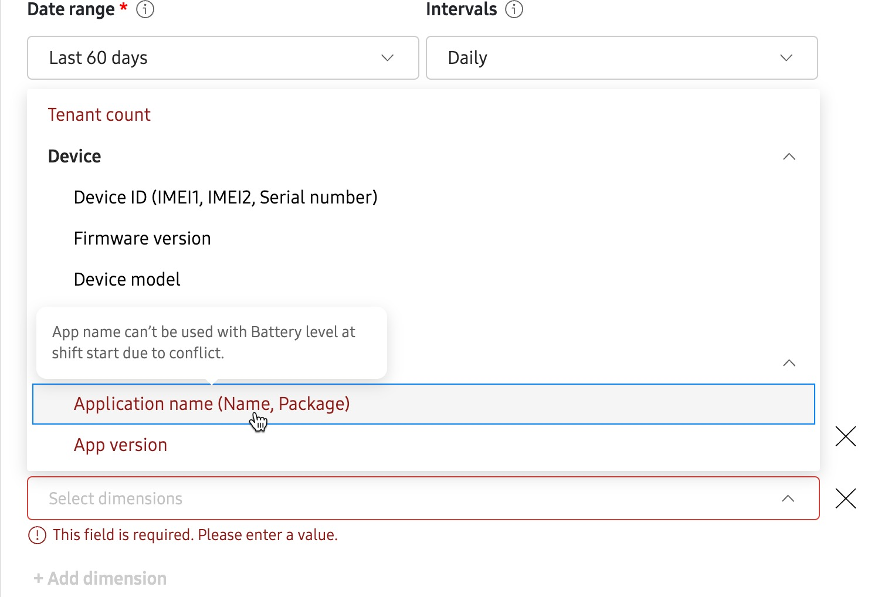
Step 5: Add filters
Filters let you specify the measures or dimensions criteria for your report. For Table type reports, filters are optional. However for Line and Pie chart type reports, you may be required to select a filter before the report can be generated (depending on the measure or dimension selected). If required, you’ll see a notification appear in the Filters field.
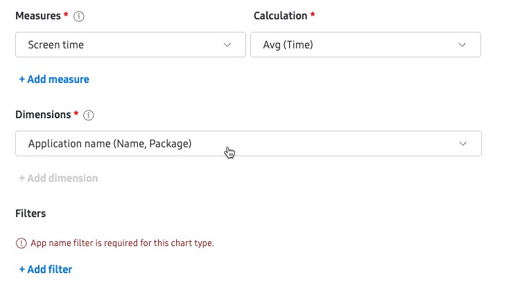
To use a filter:
-
In the Filters field, click + Add filter.
-
Select a measure or dimension value for your filter. For example, when selecting Screen time as your reporting measure, you can also select Screen time as your measures filter. This would allow you to only display data when the total screen time for any app is greater than a specified value, such as 500 minutes.
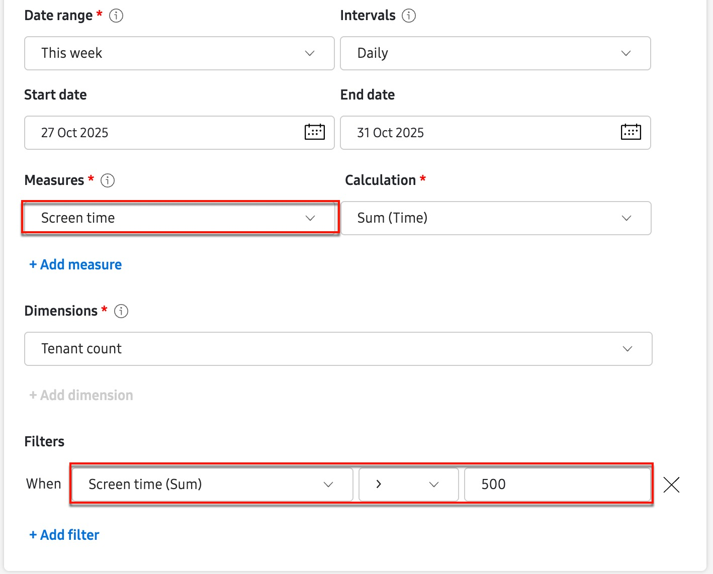
Step 6: Create, download, and preview your report
-
Once you’re finished defining your report, click Create. You’ll return to the Dynamic Data Export page where you’ll see your report in the table with an In progress status.
-
After the server successfully generates the report, the status will change to Complete and you’ll see a link to download the report for offline viewing. Click Download to receive a CSV copy of your report.
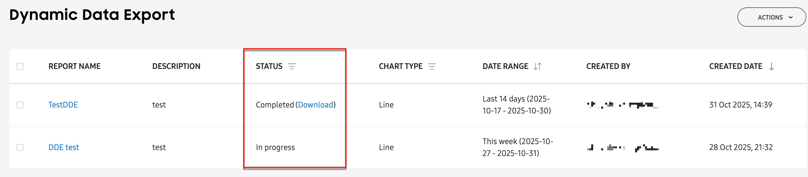
-
For Line and Pie chart type reports, you can click a report name to preview the chart in a side panel.
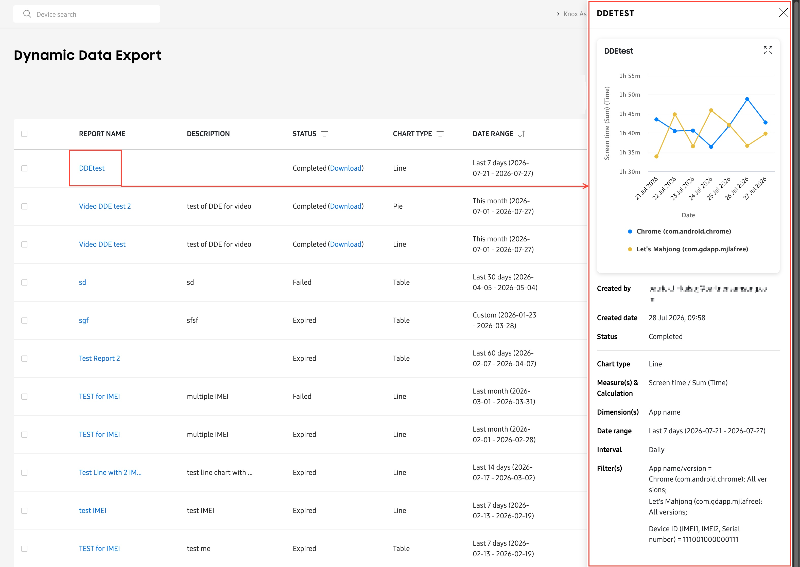
About filter limits
For some dimensions, a filter is required in order to build the report. For example, when selecting Application name as a dimension, you must use the filter to select the app names you want to include in the report, otherwise the report builder won’t know which apps to include.
The maximum number of allowable data points in a filter depends on the combination of report type (Table, Line, or Pie), measure, and dimension. If your filter has a data point limitation, you’ll see a notification appear in the filter window.
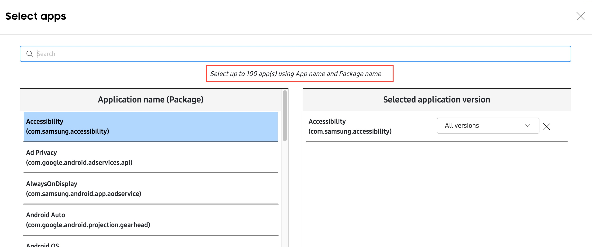
For example:
-
If you are creating a Line chart report with Screen time in the Measures field and Application name in the Dimensions field, and you want to filter on the App name/version, then you can select up to 10 apps in the filter window.
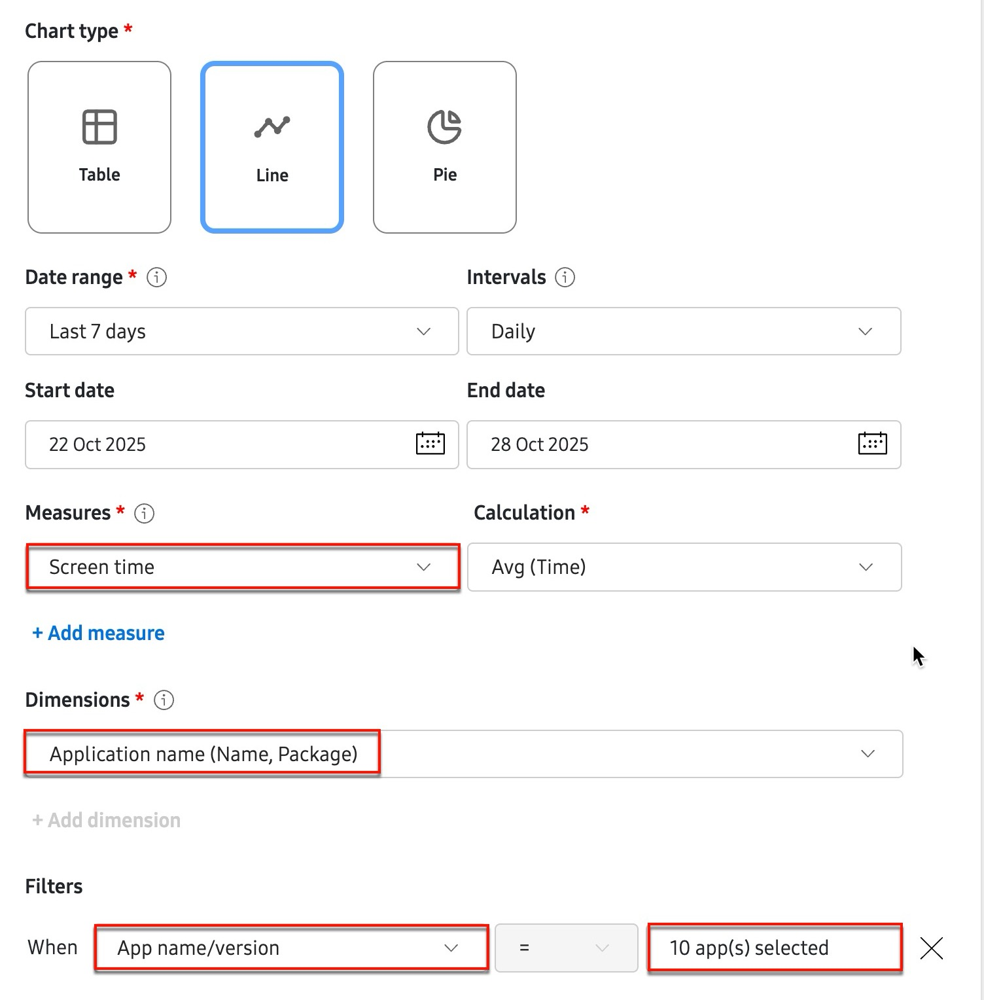
-
If you are creating a Table chart report with ANR event in the Measures field and Firmware version in the Dimensions field, and you want to filter on the App name/version, then you can select up to 100 apps in the filter window.
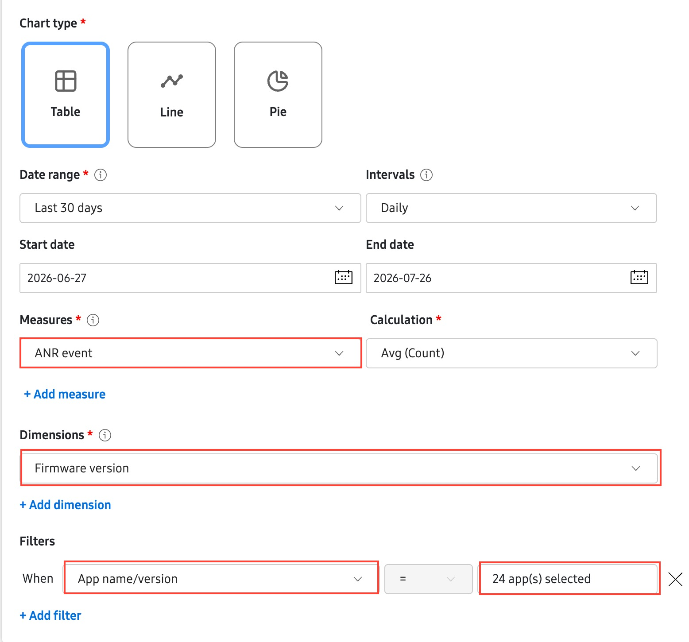
Line chart type reports with multiple measures
If you are creating a Line chart type report with a single Dimensions filter data point, you can include multiple Measures in the report. For example, if you select Application name as your Dimensions and filter on a single app, you can add multiple Measures like Total run time, Screen time, and Normalized screen time.
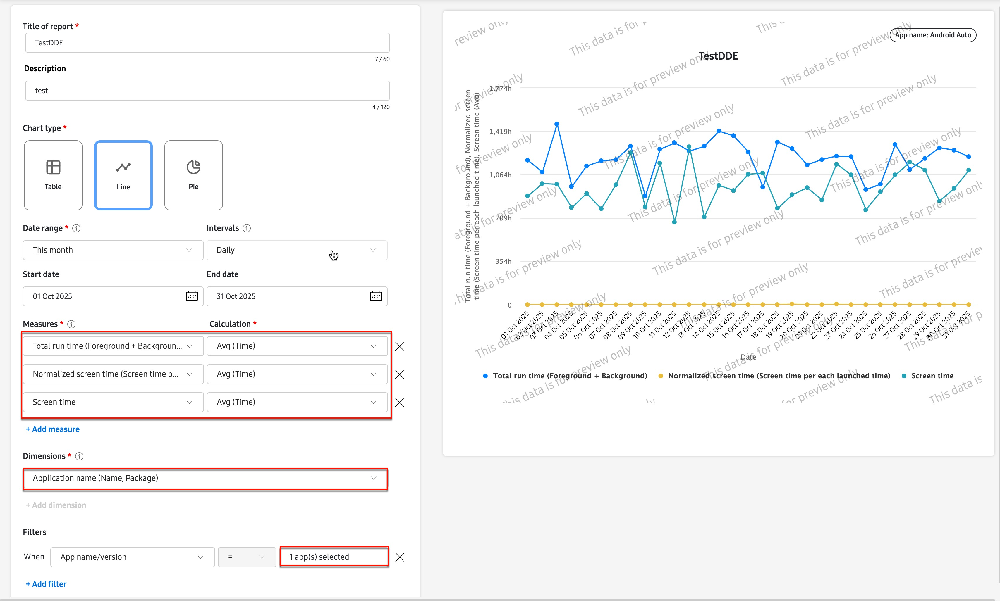
If you add more than one dimension filter, you’ll see an error message indicating that you cannot have multiple measures in the Line chart report.
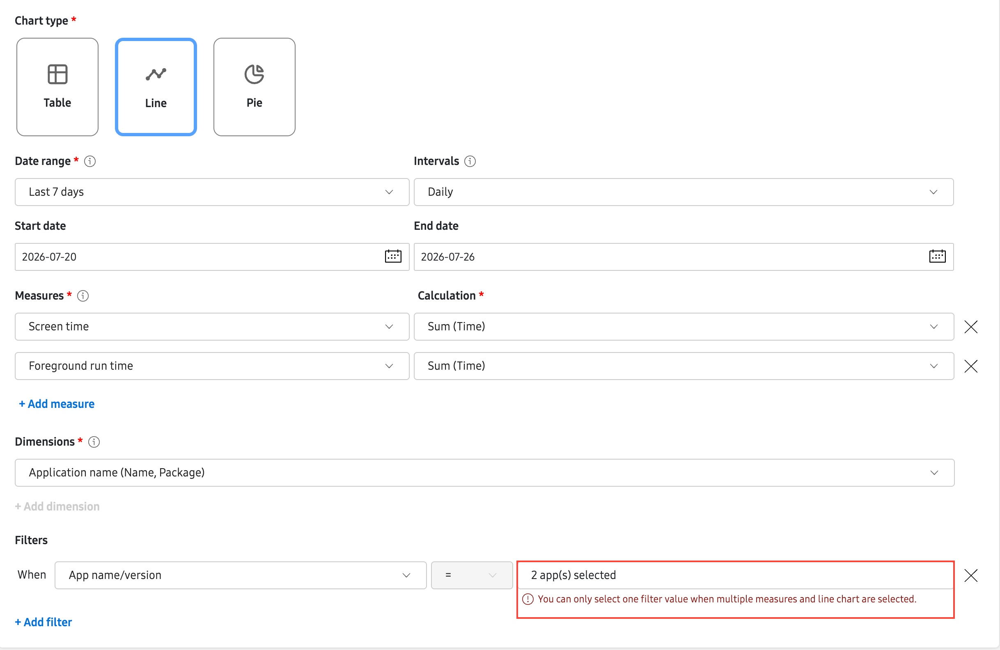
On this page
Is this page helpful?